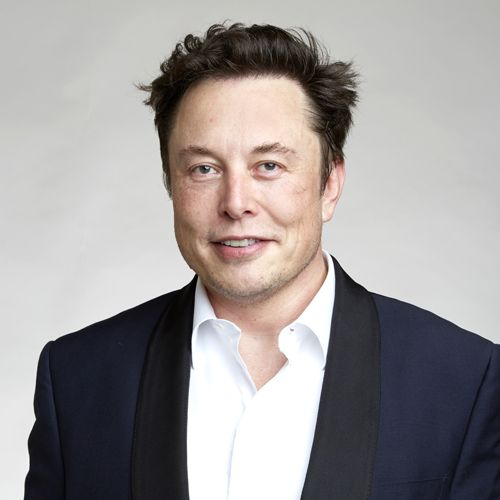

Elon Musk
Elon Reeve Musk FRS (born June 28, 1971) is an entrepreneur and business magnate. He is the founder, CEO and Chief Engineer at SpaceX; early-stage investor, CEO and Product Architect of Tesla, Inc.; founder of The Boring Company; and co-founder of Neuralink and OpenAI. With an estimated net worth of around US$255 billion as of December 2021,[2] Musk is the wealthiest person in the world.
Citizenship
- South Africa (1971–present)
- Canada (1971–present)
- United States (2002–present)
Signature

Education
Aware it would be easier to enter the United States from Canada,[24] Musk applied for a Canadian passport through his Canadian-born mother.[25][26] While awaiting the documentation, he attended the University of Pretoria for five months; this allowed Musk to avoid mandatory service in the South African military.[27] Musk arrived in Canada in June 1989, and lived with a second-cousin in Saskatchewan for a year,[28] working odd jobs at a farm and lumber-mill.[29] In 1990, Musk entered Queen's University in Kingston, Ontario.[30][31] Two years later, he transferred to the University of Pennsylvania; he graduated in 1997 with a Bachelor of Science degree in economics and a Bachelor of Arts degree in physics.
Business career
- Zip2
- X.com and PayPal
- SpaceX
- Tesla
- SEC lawsuit
Other activities
In 2013, Musk announced plans for a version of a vactrain, assigning a dozen engineers from Tesla and SpaceX to establish the conceptual foundations and create initial designs.[169] On August 12, 2013, Musk unveiled the concept, which he dubbed the Hyperloop.[170] The alpha design for the system was published in a whitepaper posted to the Tesla and SpaceX blogs.[171] The document scoped out the technology and outlined a notional route where such a transport system could be built between the Greater Los Angeles Area and the San Francisco Bay Area at an estimated total cost of $6 billion.[172] The proposal, if technologically feasible at the costs he has cited, would make Hyperloop travel cheaper than any other mode of transport for such long distances.